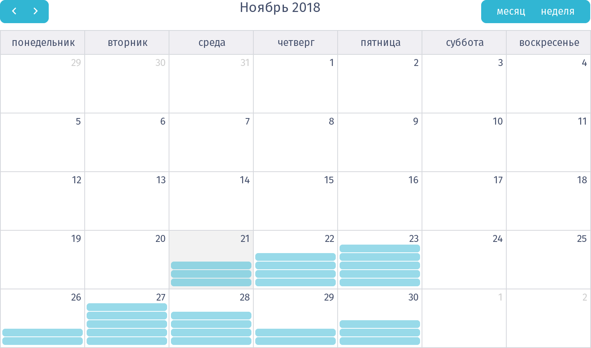

<section class="history">
	<h2 routerLink="/pre/cause" class="icon cause">Высококвалифицированный специалист</h2>
	<h2 routerLink="/pre/docs" class="icon docs">Наличие документов</h2>
	<div class="bar">
		<span></span>
		<label>75%</label>
	</div>
</section>
<h1 class="icon calendar">Дата и время визита</h1>
<section class="calendar scroll">
	
</section>
